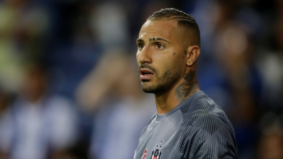

Solo Quaresma hoogtepunt bij foutloze generale repetitie Besiktas
« Vorige  Volgende »Besiktas heeft zich naast stadsgenoot Galatasaray genesteld aan kop in de Süper Lig. De Zwarte Adelaars rekenden maandagavond in eigen huis af met laagvlieger Konyaspor en gaven de overwinning van vorige week in de Champions League op FC Porto zo een passend vervolg: 2-0. Besiktas beleefde zo een uitstekende generale repetitie voor de topper van aankomende zaterdag met Fenerbahçe.
De ploeg van Senol Günes verraste woensdag door met 1-3 te winnen in Portugal en kende maandagavond voor eigen publiek een droomstart dankzij Cenk Tosun. De Turkse spits tekende na tien minuten spelen met het hoofd voor de openingstreffer na een voorzet van Caner Erkin. Het betekende voor Tosun alweer zijn zesde doelpunt in zijn laatste acht wedstrijden voor club en land.
Ryan Babel kon bij Besiktas opnieuw rekenen op een basisplaats en hij was halverwege de tweede helft getuige van een kunststukje van Ricardo Quaresma. Laatstgenoemde soleerde op fraaie wijze voorbij twee tegenstanders en gaf doelman Serkan Kirintili vervolgens het nakijken met een verwoestende uithaal. De Portugese flankspeler werd tien minuten voor tijd naar de kant gehaald ten faveure van Jeremain Lens.